Part A: Image Warping and Mosaicing
Code: Kaggle notebook with all of my work
If you stand in one spot and rotate the camera, any two photos you take are related by a homography: a 3×3 matrix that maps points in one photo to points in the other. Once I know that matrix, I can warp one photo into the other's view and lay them on top of each other to make a wider picture. In this part I recover homographies from clicked point pairs, write my own inverse warping with two interpolation methods, check it by rectifying flat artwork, and then stitch photos into mosaics.
I wasn't allowed to use library homography or warping functions
(cv2.findHomography, cv2.warpPerspective,
cv2.getPerspectiveTransform, skimage.transform.warp, etc.), so
everything below is written with NumPy. OpenCV is only used to load and resize images.
For each mosaic I stood in one place and only rotated my phone between shots, so all the photos share a center of projection. I aimed for a lot of overlap between neighboring shots so there would be plenty of features to match. I shot three sets: two photos outside, three photos inside, and three photos of a kitchen.
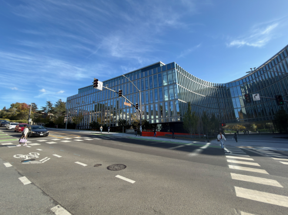
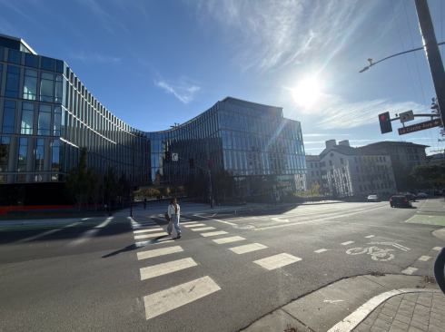
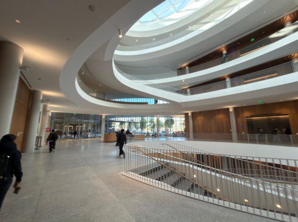
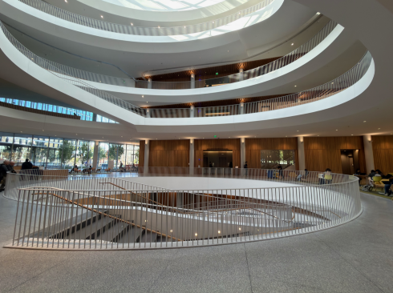
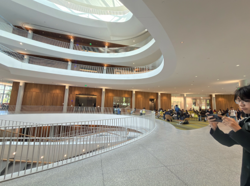
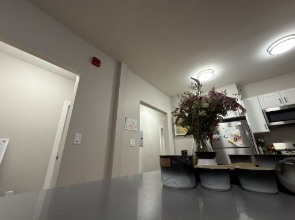
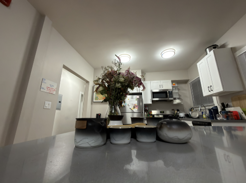
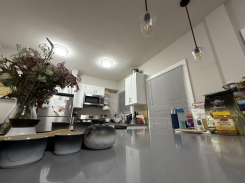
A homography maps a point (x, y) to (x', y') like this:
[w x'] [a b c] [x]
[w y'] = [d e f] [y]
[ w ] [g h 1] [1]
The bottom-right entry is fixed to 1, which leaves 8 unknowns. Dividing out
w = gx + hy + 1 and rearranging gives two equations that are linear in the
unknowns, one for x' and one for y':
a x + b y + c - g x x' - h y x' = x'
d x + e y + f - g x y' - h y y' = y'
Each point pair adds two rows to a system A h = b. Four pairs give exactly 8
equations, but a click that's off by a couple of pixels can throw the answer off a lot.
So I click more points than that (10 for each mosaic pair) and solve the overdetermined
system with least squares.
def computeH(im1_pts, im2_pts):
im1_pts = np.asarray(im1_pts, dtype=float)
im2_pts = np.asarray(im2_pts, dtype=float)
n = im1_pts.shape[0]
A = np.zeros((2 * n, 8))
b = np.zeros(2 * n)
for i in range(n):
x, y = im1_pts[i]
xp, yp = im2_pts[i]
A[2 * i] = [x, y, 1, 0, 0, 0, -x * xp, -y * xp]
A[2 * i + 1] = [0, 0, 0, x, y, 1, -x * yp, -y * yp]
b[2 * i] = xp
b[2 * i + 1] = yp
h, *_ = np.linalg.lstsq(A, b, rcond=None)
return np.append(h, 1.0).reshape(3, 3)I picked points by reading pixel coordinates off the images, using sharp corners that are easy to find again in the other photo: window corners and roof edges on the building, and railing posts and balcony edges in the inside set. The numbers show which point matches which.
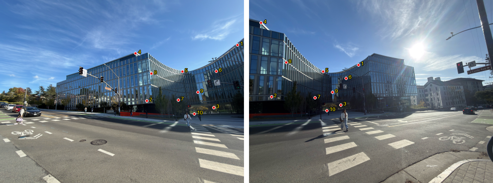
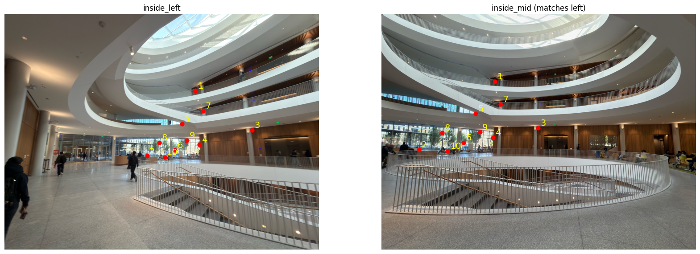
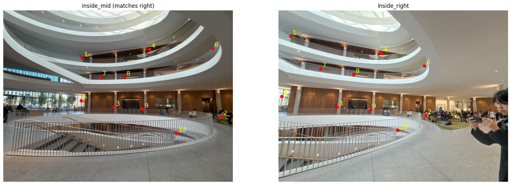
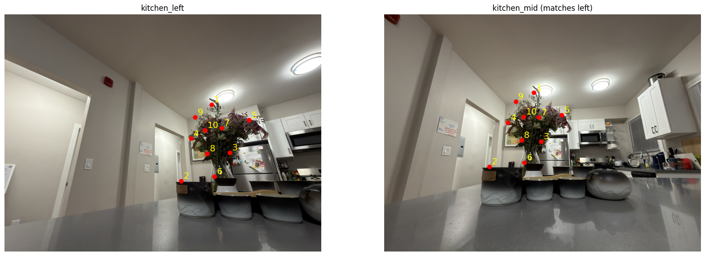
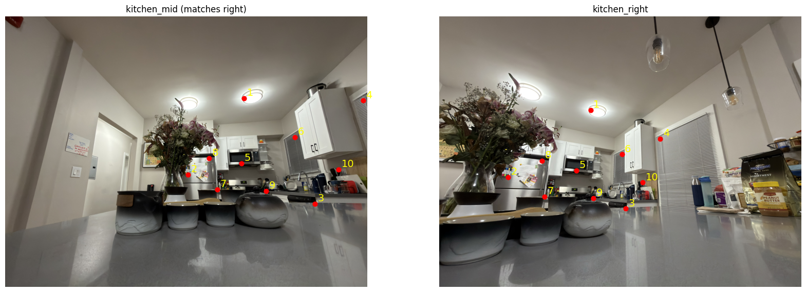
Here is the full system for the first rectification below (Art 1), which uses the four
corners of the mosaic as im1_pts and a 1000×400 rectangle as
im2_pts. With exactly four points the system is square and least squares
solves it exactly.
A =
[ 621 1116 1 0 0 0 -385641 -693036]
[ 0 0 0 621 1116 1 -693036 -1245456]
[ 1708 1209 1 0 0 0 -2768668 -1959789]
[ 0 0 0 1708 1209 1 -1906128 -1349244]
[ 1733 1622 1 0 0 0 -2809193 -2629262]
[ 0 0 0 1733 1622 1 -2627228 -2458952]
[ 638 1752 1 0 0 0 -396198 -1087992]
[ 0 0 0 638 1752 1 -967208 -2656032]
b = [621, 1116, 1621, 1116, 1621, 1516, 621, 1516]The recovered homographies:
Art 1 (rectification) Art 2 (rectification)
[ 0.3461 0.0075 313.6795] [ 2.0622 0.0040 -369.9779]
[-0.3598 0.5945 525.0995] [ 0.7180 1.1255 -247.5276]
[-0.0003 0.0000 1.0000] [ 0.0006 -0.0000 1.0000]
Inside left → middle Inside right → middle
[17.0849 -1.2874 -2392.2806] [ 0.1819 0.0426 121.4705]
[ 6.9331 10.9969 -1770.0776] [-0.3530 0.6596 55.5697]
[ 0.0419 -0.0008 1.0000] [-0.0021 -0.0001 1.0000]
Kitchen left → middle Kitchen right → middle
[ 5.2969 -0.5058 -599.5849] [ 0.0210 0.1075 137.8513]
[ 1.9874 3.7711 -559.6039] [-0.4589 0.6130 64.8403]
[ 0.0105 0.0008 1.0000] [-0.0025 -0.0001 1.0000]
Outside left → right
[-2.9699 0.3720 971.6576]
[-1.7382 -1.7635 796.7154]
[-0.0063 0.0004 1.0000]As a check, I mapped each clicked point through its homography and measured how far it landed from its match. For all five mosaic pairs, at the resolution I stitched at, every point landed within 0.3 pixels, so 10 points was enough to pin the matrices down.
I used inverse warping. If I pushed each source pixel forward through H,
some output pixels would get nothing and leave holes. Instead I go the other way: for
every output pixel, map it back through H-1 to find where it came
from in the source, then read a color there. Both of my warp functions follow these steps:
H, and the min/max of the results gives the bounding box of the warped
image.
H-1, and divide by w to get source coordinates.
This is all one matrix multiply, with no Python loop over pixels.
I treat (0, 0) as the center of the top-left pixel, so integer
coordinates land exactly on pixel centers and the image spans
0 … width−1.
Nearest neighbor rounds the source coordinate to the closest pixel and copies it. Bilinear takes the four pixels around the source coordinate and blends them, weighting each by how close it is:
# nearest neighbor
rx = np.round(src_x).astype(int)
ry = np.round(src_y).astype(int)
out[valid] = image[ry[valid], rx[valid]]
# bilinear
x0, y0 = np.floor(sx).astype(int), np.floor(sy).astype(int)
x1, y1 = np.minimum(x0 + 1, width - 1), np.minimum(y0 + 1, height - 1)
dx, dy = (sx - x0)[:, None], (sy - y0)[:, None]
top = image[y0, x0] * (1 - dx) + image[y0, x1] * dx
bottom = image[y1, x0] * (1 - dx) + image[y1, x1] * dx
out[valid] = top * (1 - dy) + bottom * dy
Before stitching anything, I tested the warp on single photos. Each one shows a flat
rectangular mosaic hanging on a museum wall at an angle. I clicked its four corners and
mapped them to a rectangle with the right shape: 1000×400 for the long first one and
1000×1000 for the roughly square second one. If computeH and the warp
are right, the artwork should come out looking like it was shot straight on.
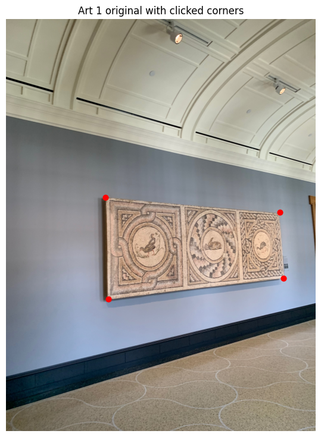
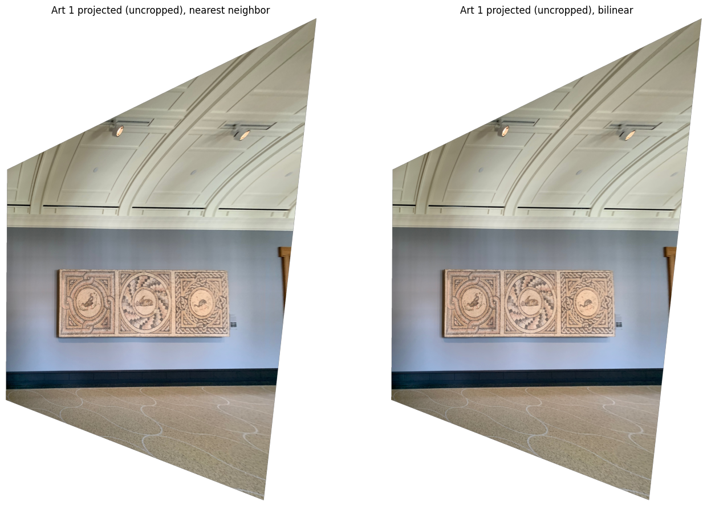
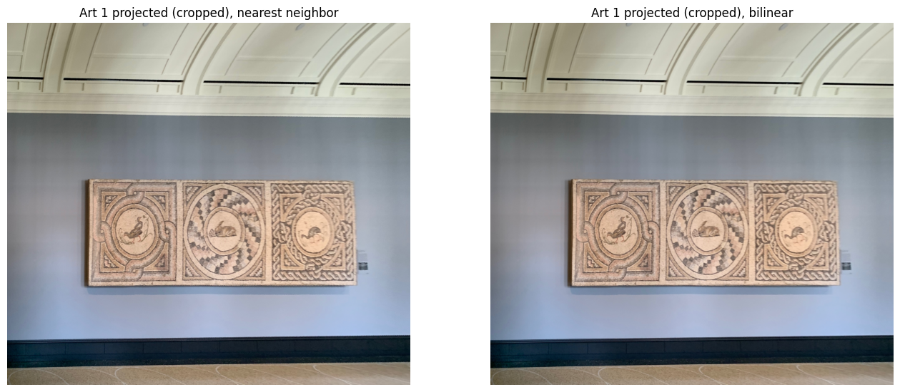
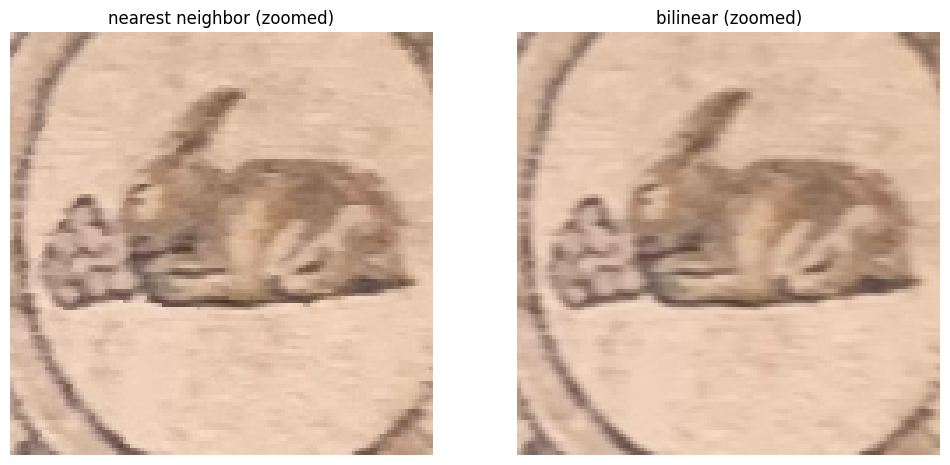
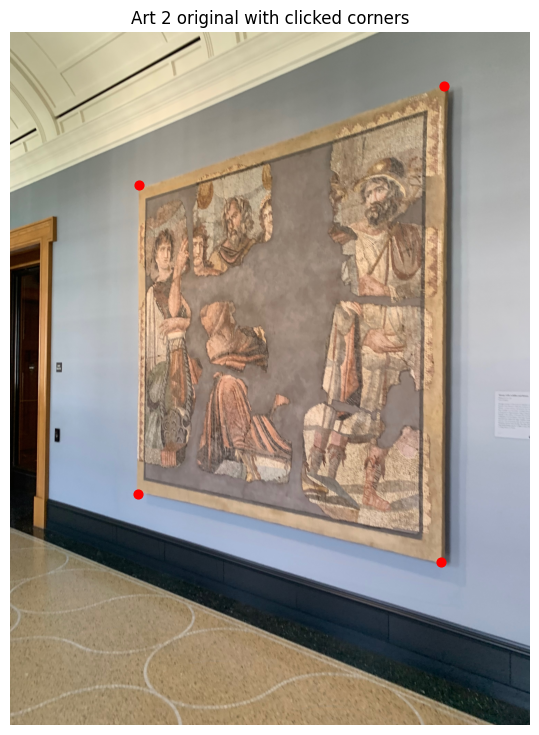
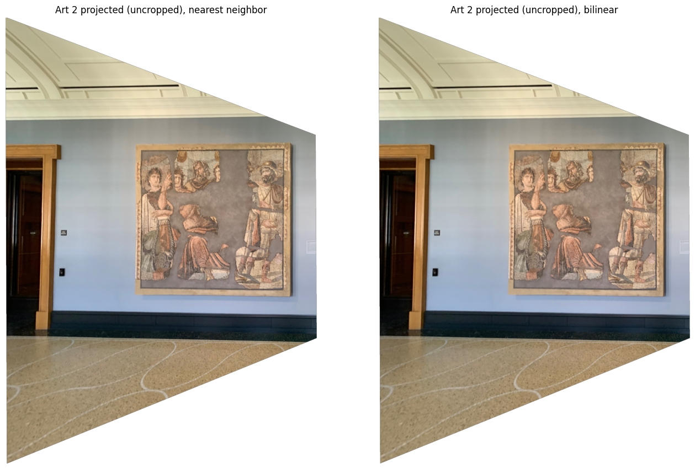
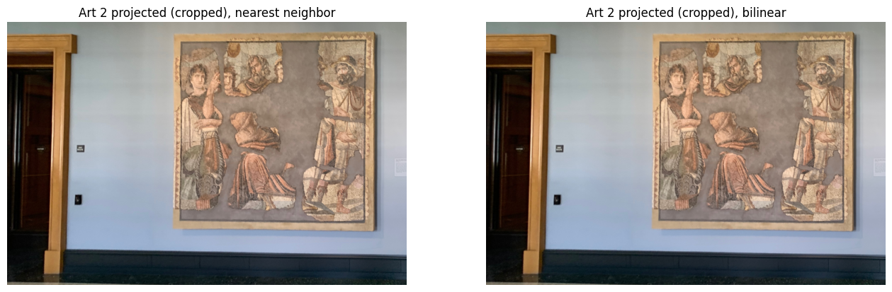
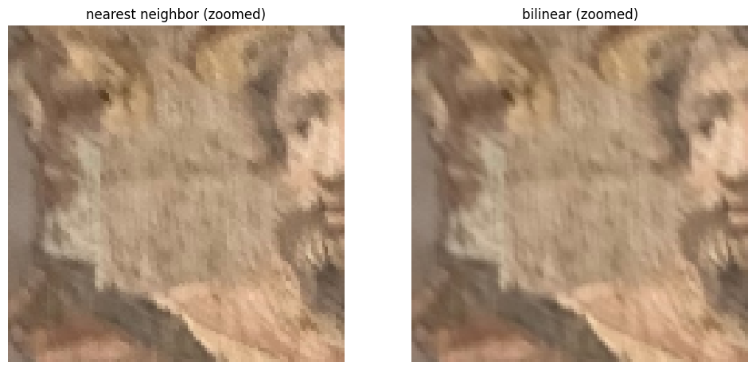
| Image | Output size | Nearest neighbor | Bilinear |
|---|---|---|---|
| Art 1 | 1833 × 2853 | 0.84 s | 1.86 s |
| Art 2 | 2025 × 2908 | 0.88 s | 2.21 s |
At full size the two look almost the same. The difference shows up when zoomed in. Nearest neighbor gives jagged, stair-stepped edges, which are easiest to see on the rabbit's outline and the dark border of the oval. Where the warp stretches the image, it copies the same source pixel into several output pixels in a row, so you get blocky streaks. Bilinear blends neighbors, so edges are smooth and there's no blockiness, at the cost of looking slightly softer.
Bilinear was about 2–2.5× slower, because each output pixel reads four source pixels and does a few multiplies instead of one lookup. For these images that's only a second or two, so I used bilinear for all of the mosaics. Nearest neighbor would make sense for quick previews, or for data like label masks that shouldn't be blended.
The procedure for each mosaic:
computeH.
warpImageBilinear. The weight channel
gets warped along with the colors, and the warp also returns its usual 0/1 alpha mask.
I tried three ways of combining the overlapping images and compared them on every mosaic.
Average. Add up the colors and divide by how many images cover each pixel. Each image counts equally right up to its border, so wherever one image ends, the color jumps. Any exposure difference between photos shows up as a hard seam.
Feathered. Weight each image by how far a pixel is from that image's nearest edge, so an image fades out as you get close to its border. This weight is the extra channel from step 3:
def edge_weight(image):
h, w = image.shape[:2]
xs, ys = np.meshgrid(np.arange(w), np.arange(h))
dist = np.minimum(np.minimum(xs, w - 1 - xs), np.minimum(ys, h - 1 - ys))
return (dist + 1) / (dist.max() + 1)
def feather_blend(layers):
total = sum(rgb * weight[..., None] for rgb, weight, alpha in layers)
weight_sum = sum(weight for rgb, weight, alpha in layers)
return total / np.maximum(weight_sum, 1e-8)[..., None], weight_sum > 0This gets rid of the seams, because the switch from one image to the next is spread across the whole overlap. The downside is that it averages everything, including fine detail. If the two images are off by a few pixels, you see both copies faintly on top of each other (ghosting).
Two-band. Split each image into a low-frequency part (a Gaussian blur, σ = 4) and a high-frequency part (the image minus the blur). Blend the low frequencies with the feathered weights, which smooths out brightness and color differences. For the high frequencies, don't average at all: at each pixel take the detail from whichever image has the largest weight there. The result keeps the smooth color transition of feathering, but edges and textures come from a single image, so they don't ghost.
for rgb, weight, alpha in layers:
# blur, then divide by the blurred mask so black outside the image doesn't bleed in
low = cv.GaussianBlur(rgb, (0, 0), sigma) / np.maximum(cv.GaussianBlur(alpha, (0, 0), sigma), 1e-8)[..., None]
detail = (rgb - low) * alpha[..., None]
low_total = low_total + low * weight[..., None]
weight_sum = weight_sum + weight
wins = weight > best_weight # this image has the most weight here
high[wins] = detail[wins]
best_weight[wins] = weight[wins]
mosaic = np.clip(low_total / np.maximum(weight_sum, 1e-8)[..., None] + high, 0, 1)Dividing the blurred image by the blurred mask matters. Without it, blurring near the image border would mix in the black pixels outside the image and leave a dark halo. Two-band looked best on all three mosaics, so the results below use it.
With only two photos, warping one straight into the other's view stretches it a lot.
Instead I warp both halfway, into a view between the two. If H takes
left to right, then applying √H twice does the same thing, so
√H takes left to the halfway view. I compute the matrix square root from
the eigendecomposition, and the right image then gets
√H · H-1. That way both images are distorted by the
same amount instead of one taking all of it.
H = computeH(outside_left_pts, outside_right_pts)
vals, vecs = np.linalg.eig(-H) # -H is the same homography (scale doesn't matter)
H_left = (vecs @ np.diag(np.sqrt(vals)) @ np.linalg.inv(vecs)).real # left -> middle
H_right = H_left @ np.linalg.inv(-H) # right -> middle
I square-root -H instead of H. Least squares returned a matrix
whose overall sign is flipped, which doesn't change where any point goes, but the square
root of the negated version is the one that gives a sensible halfway view.
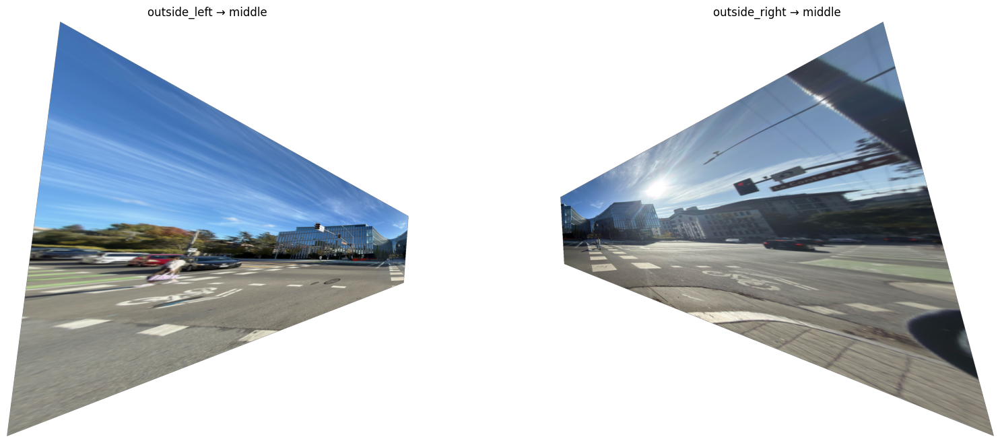
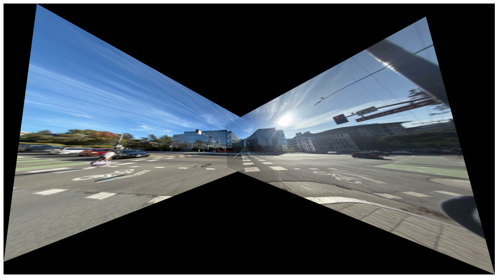
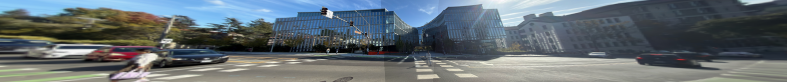
The building lines up well where the photos overlap, and the curved facade reads as one building. The right photo was shot into the sun, so it's darker than the left. With averaging, that difference shows up as a hard vertical line in the middle. Feathering and two-band both turn it into a gradual change. The phone's wide lens adds some barrel distortion, which a homography can't model, so the edges of the frame still bend a little.
With three photos, the natural choice is to keep the middle one fixed and warp the left and right photos into its view.
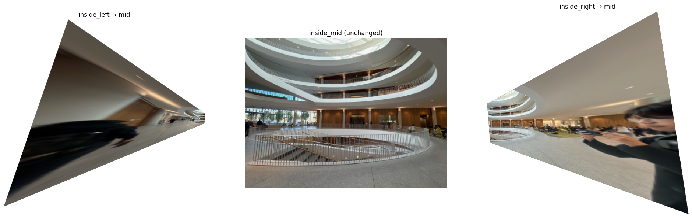
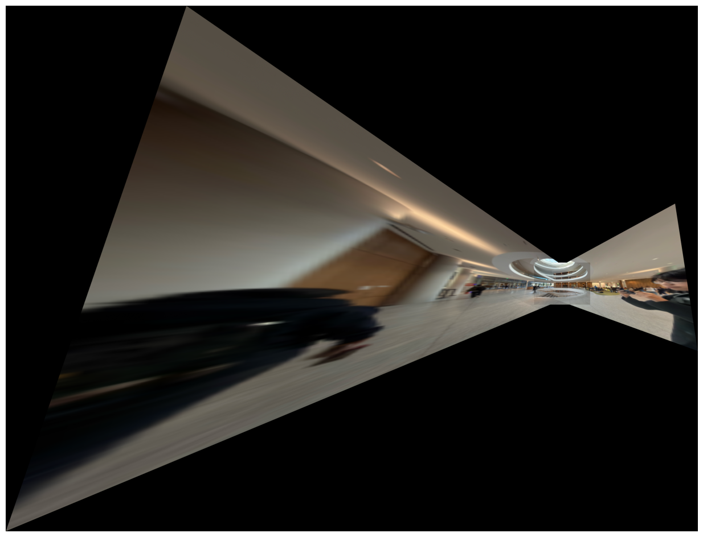
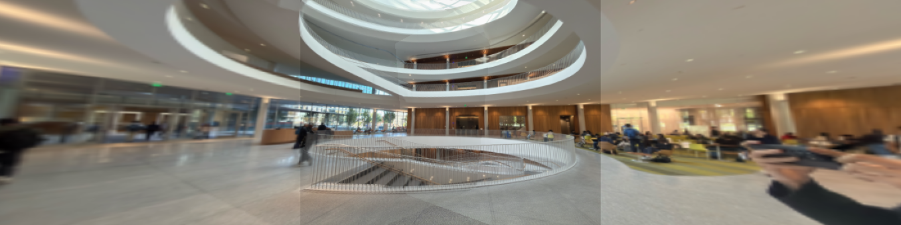
Zoomed in on the railing around the stair opening:
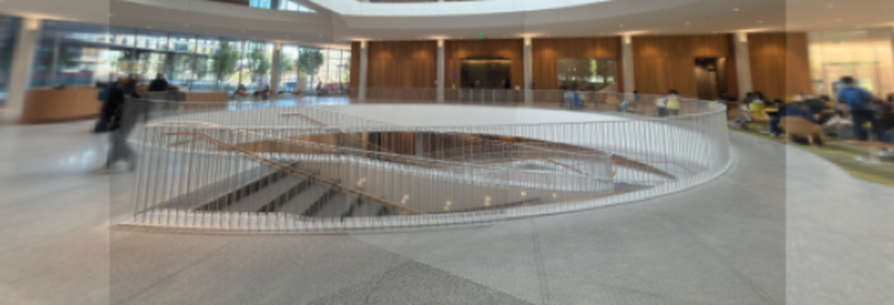
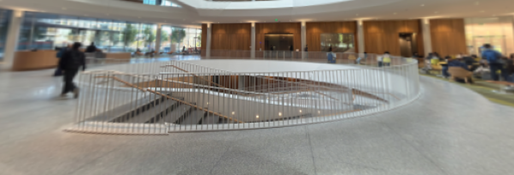
The left photo was taken at a much larger rotation from the middle one, and since a flat projection stretches more the farther you get from the center, it blows up and gets blurry toward its outer edge. That's why I cropped to the middle photo's height and limited the width. This mosaic shows the difference between the blends most clearly. Averaging leaves the outline of the middle photo as a brighter rectangle, because its exposure doesn't match its neighbors. Feathering fixes that but turns the railing into a double image, and the person walking (who moved between shots) shows up twice. Two-band keeps the smooth brightness and a single sharp railing.
Same setup as the inside mosaic: the middle photo stays fixed, and the left and right photos are warped into its view. I shot this one from low down at counter height, close to the objects on the counter.
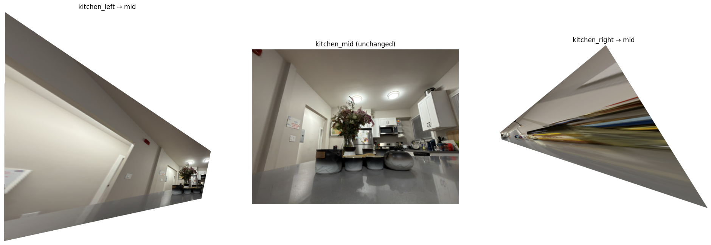
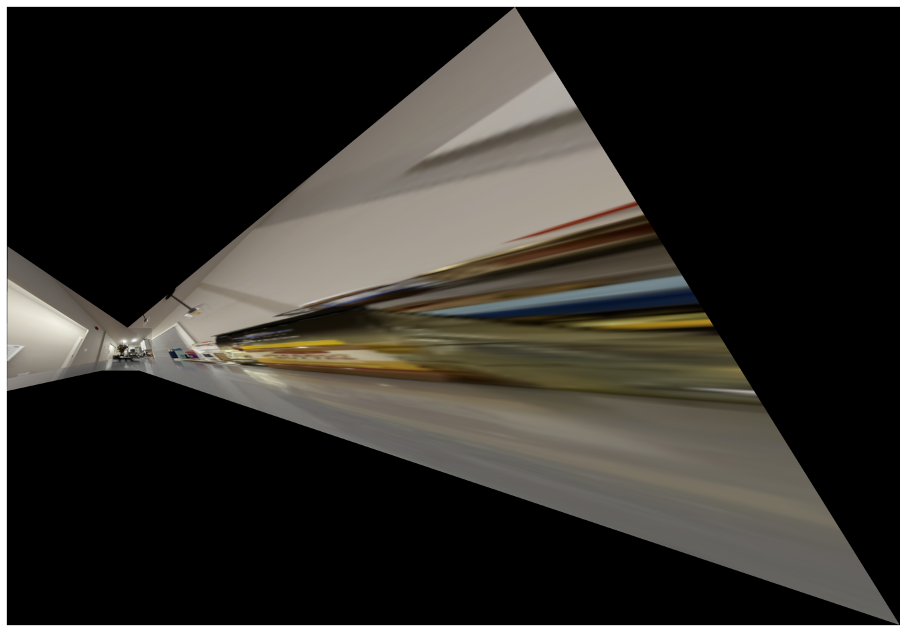
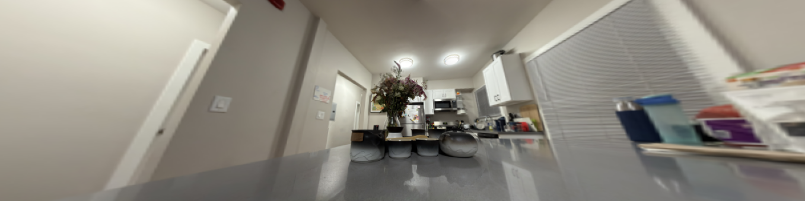
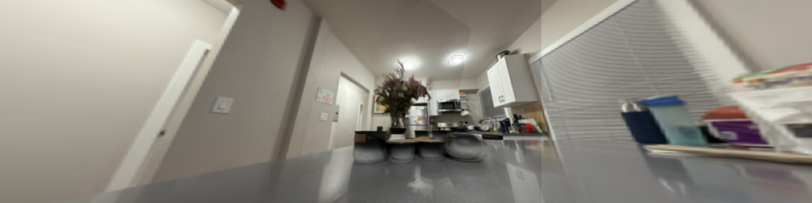
Zoomed in on the counter:
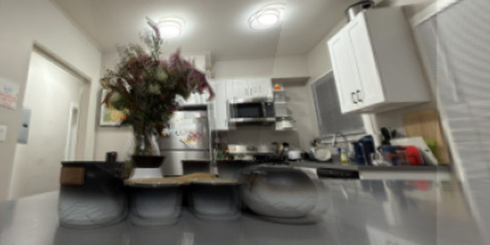
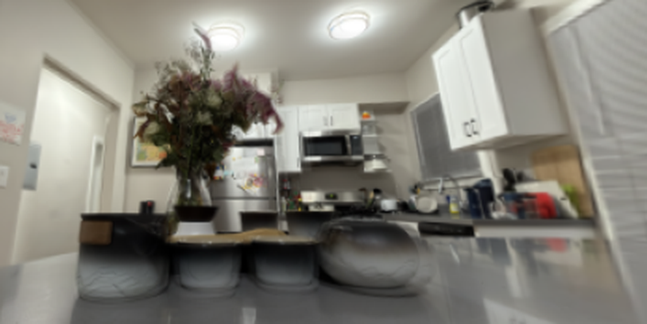
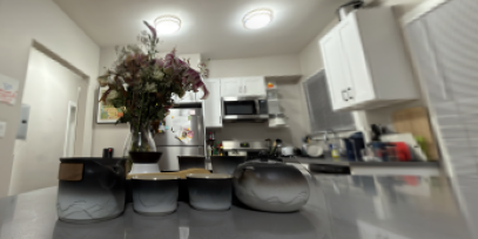
The walls, doorway, cabinets and microwave line up, and the panorama shows much more of the room than any single photo. The hard part is the counter in the middle. The pots and the vase were only a foot or two from the phone, so even a small shift of the phone between shots causes parallax: nearby objects move against the background more than a pure rotation would explain. A single homography can't fit both near and far things at once, so the two photos disagree about where the pots are. Feathering averages the two positions, and you see a blurry double pot. Two-band hides most of this because each pixel's detail comes from only one photo, but it can't truly fix a misalignment. The far right edge is also heavily stretched because that photo was rotated a long way from the middle one. A tripod, or more care to rotate around the lens, would help most.
The most useful thing was how much the point correspondences matter. With 10 good points the fit was within a fraction of a pixel, but a homography is still only right for a pure rotation and a lens with no distortion, so any parallax or barrel distortion shows up as misalignment no matter how carefully you click. I also saw why planar mosaics get stretched at the edges: the farther a photo is rotated from the reference, the more it gets stretched, which is exactly what happened to the left inside photo.